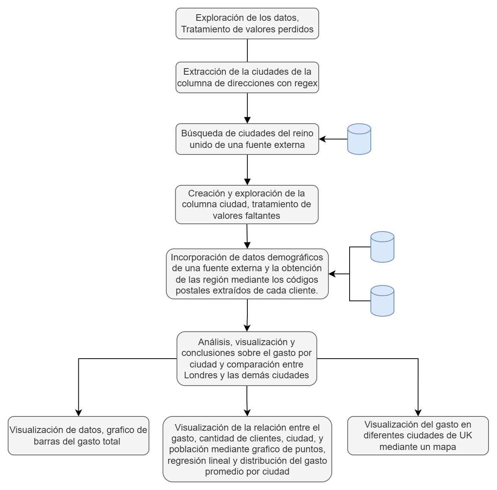

Una exploración visual impulsada por datos.
Freddy Villca Villegas * 7 min read * May 2025
Rysons International Group UK, un empresa de retail B2B con sede en el Reino Unido, ha pedido información sobre los volúmenes de gasto de los clientes con sede en Londres frente a los del resto del Reino Unido. El consejo ha proporcionado un extracto de datos de alto nivel que contiene las direcciones de todos los clientes y su gasto total hasta la fecha. La empresa quiere saber:
Se han utilizado herramientas de visualización interactivas como Plotly y Altair.
Los pasos realizados en este proyecto son:
Se utilizaron 3 fuentes de datos externas publicas, ademas se empleo para el analisis herramientas como como pandas, regex, seaborn, ploty y altair para realizar las visualizaciones.
En esta seccion se presentan los hallazgos o insights obtenidos.
En la siguiente tabla se muestra a las 20 ciudades que tuvieron mayor gasto.
Tal como se puede observar en el anterior grafico, Londres es la ciudad con el gasto mas alto frente a las demas ciudades, con £ 102M. Las demas ciudades de Uk poseen un gasto menor a £ 20M.
Las ultimas 20 ciudades presentan gastos menores a £ 2M. Esto puede deberse a que son ciudades pequeñas con pocos clientes o con poca actividad económica.
Se puede notar que la region de Uk que genera mas gasto o ingreso es Londres con £ 138.4M y la region con menor gasto es Irlanda del Norte. Existen 3 regiones por debajo de £20M que son: Gales (£ 14M), la region Noreste de Inglaterra (£ 11M) y Irlanda del norte (£ 7.4M). Con esto podemos decir que la base de clientes se encuentran en Londres.
Los mayores ingresos provienen de las ciudades más pobladas debido a que estas cuentan con mas clientes en ellas, como se puede observar en el gráfico. Existen una relacion ascendete entre la cantidad de clientes y la población de una ciudad. A medida que una ciudad tenga mayor poblacion tambien se puede obtener más clientes y por tanto más ingresos. Hay ciudades que tienen más poblacion que otras pero que poseen casi la misma cantidad de clientes, por lo cual hay la oportunidad de seguir consiguiendo nuevos clientes en esas ciudades.
Se tienen una relacion lineal entre el gasto y la cantidad de clientes. Por cada cliente que se obtiene, se llega a generar un ingreso aproximado de £4963.25.
Regresion: Total spend = 4963.25 * N custumers - 9968.94 | con R²: 1.000, P-valor: 3.356e-269, Error estándar: 2.01
Los clientes con mayor promedio de gasto son de la ciudad de Kirkwall en Escocia.
Existe una variación del gasto por cliente atraves de UK. La mediana del gasto se encuentra en £ 4952.74, mientras que el 50% central del gasto esta comprendido entre £ 4908.83 y £ 4989.79. Las ciudades como KIRKWALL, OXFORD y DUMFRIES presentan un gasto por persona que se encuentra fuera del rango tÃpico, al superar los lÃmites definidos por el boxplot. Estas ciudades tienen un gasto por persona significativamente más alto que el resto.
Por otro lado, se tienen ciudades con un gasto promedio menor al limite inferior de la distribución obtenida, estos son: LERWICK, LUTON, OUTER HEBRIDES y LLANDRINDOD WELLS. Estan se encuentran fuera de la region de Inglaterra.
Se puede notar que la region de Londres es la que presenta menor variabilidad sobre los gastos por cliente. En cambio Wales o Gales es la region con mayor variabilidad sobre los gastos popr cliente. Esta region tiene a la ciudad de Kirkwall en donde hay clientes que gastan mas del promedio nacional.
Las ciudades más alejadas del promedio de gasto por cliente son: Kirkwall y LLandrindod Wells. Kirkwall la ciudad con mejor rendimiento, tambien es la ciudad con la menor cantidad de clientes (18). POdemos tomar como ciudades desatentidas aquellas que se encuentran por debajo del gasto del promedio nacional de los clientes.